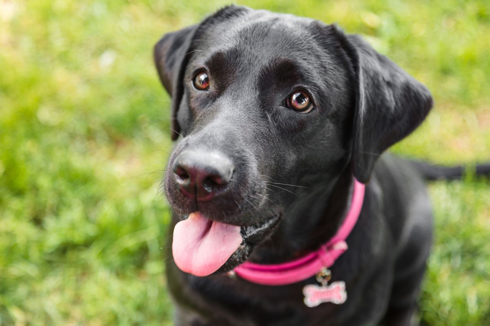

years old.
His favorite food is
cheese puffs.
He loves attention

He never leaves anywhere without his ballsnoopy is 4
He loves meeting other dogs

He loves meeting other dogs
| Animal Rescue Services |
|
|---|
| Cheese Puff is 5 years old. His favorite food is cheese puffs. |
 | Louis is 9 years old. He loves attention |
|
smelly is 3 years old. He never leaves anywhere without his ballsnoopy is 4 He loves meeting other dogs |
|
|
| snoopy is 4 He loves meeting other dogs |